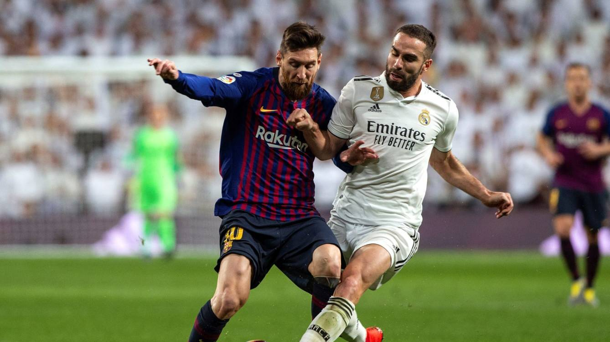
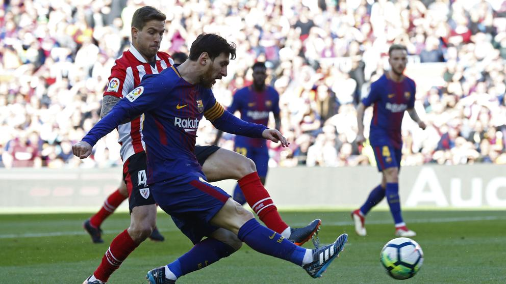
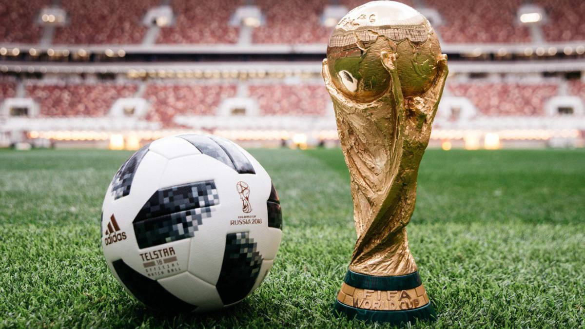

El fútbol o futbol (del inglés británico football, traducido como balompié) es un deporte de equipo jugado entre dos
conjuntos de once jugadores cada uno y algunos árbitros que se ocupan de que las normas se cumplan correctamente.
Es ampliamente considerado el deporte más popular del mundo, pues lo practican unas 270 millones de personas.
|  |
|  |
|  |